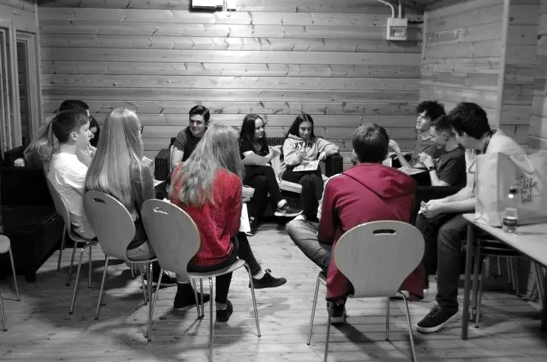
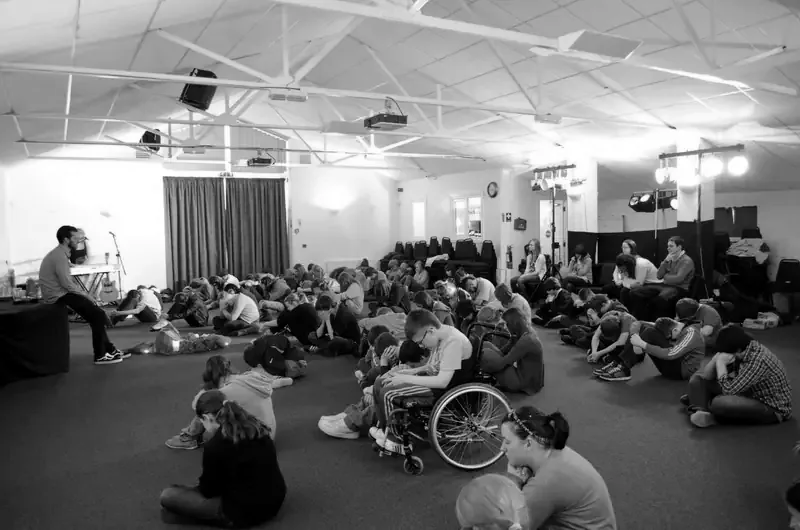
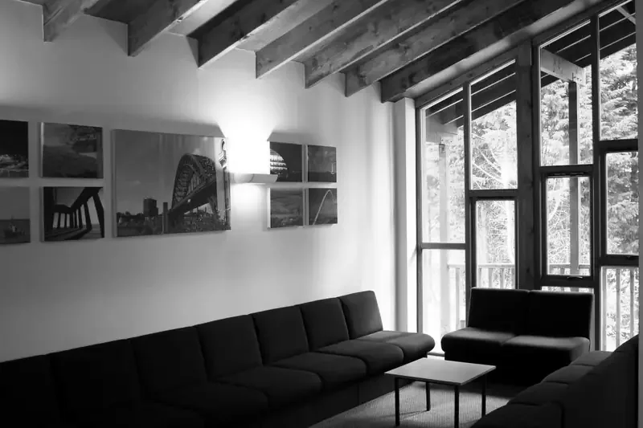
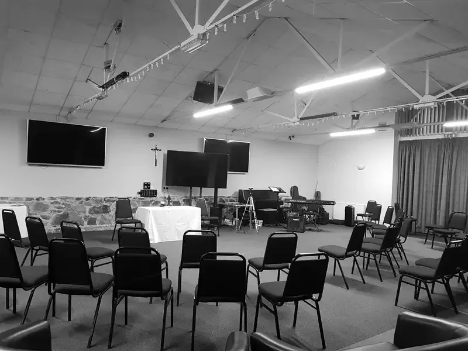
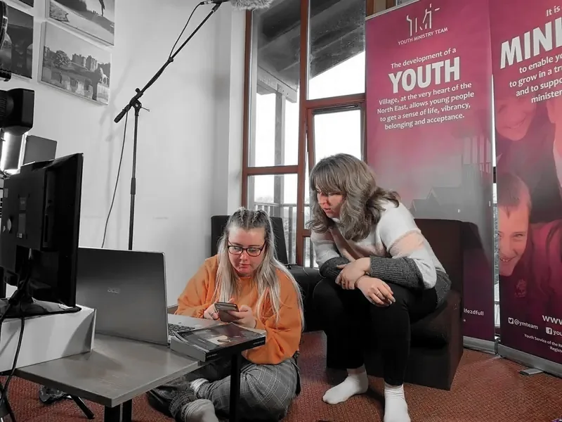

Brochure18–30
The Internship brochure
What the year looks like.
PDFPDF

Live in community at the Village for a year, lead retreats for schools, and pray together morning and night.
August
Arrive, train and settle into community life.
September to July
Lead residential retreats for schools.
All year
Help plan and run The Source and outreach.
Summer
Help run the Behold festivals.
Every day
Pray together, morning and night.




Each year's team arrives from across the world. Choose a country to see its route.
Drag the globe to turn it.